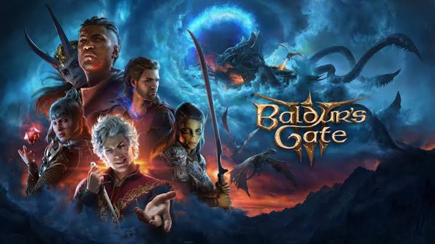

#6
Baldur's Gate 3
Um RPG de fantasia em que o jogador forma um grupo e faz escolhas difíceis que mudam o rumo da história e do mundo.
- Nota MetaCritic 96
- Lançamento 2023
- Plataforma PC / PS5 / Xbox Series X|S
- Desenvolvedora Larian Studios